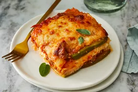

<!DOCTYPE html>
<html lang="es"></html>
<head>
   <meta charset="UTF-8">
   <meta name="viewport" content="width=device-width, initial-scale=1.0">
   <title>Receta</title>
</head>
<body>
   <header>
      <h1>Receta de Lasaña</h1>

      <style>
         body {
            font-family: Arial, sans-serif;
            line-height: 1.6;
            margin: 20px;
         }
         h1 {
            color: #2e4b88;
         }
         h2 {
            color: #16a085;
         }
         ul {
            list-style-type: square;
         }
      </style>

      
   </header>
   <main>
      <section>
         <h2>Ingredientes</h2>
         <ul>
            <li>Fideos de lasaña</li>
            <li>Carne molida</li>
            <li>Salsa de tomate</li>
            <li>Queso ricotta</li>
            <li>Queso mozzarella</li>
            <li>Queso parmesano</li>
            <li>Ajo</li>
            <li>Cebolla</li>
            <li>Aceite de oliva</li>
            <li>Sal</li>
            <li>Pimienta</li>
            <li>Condimento italiano</li>
         </ul>
      </section>
      <section>
         <h2>Instrucciones</h2>
         <ol>
            <li>Precalentar el horno a 375°F (190°C).</li>
            <li>Cocinar los fideos de lasaña según las instrucciones del paquete.</li>
            <li>En una sartén grande, calentar el aceite de oliva a fuego medio. Agregar el ajo y la cebolla, y cocinar hasta que estén suaves.</li>
            <li>Agregar la carne molida a la sartén y cocinar hasta que se dore. Escurrir el exceso de grasa.</li>
            <li>Agregar la salsa de tomate, sal, pimienta y condimento italiano. Cocinar a fuego lento durante 10 minutos.</li>
            <li>En un bol, mezclar el queso ricotta con una pizca de sal y pimienta.</li>
            <li>En una fuente para hornear, esparcir una capa de salsa de carne. Agregar una capa de fideos de lasaña, seguida de una capa de queso ricotta, queso mozzarella y queso parmesano. Repetir las capas hasta que se usen todos los ingredientes, terminando con una capa de mozzarella y parmesano encima.</li>
            <li>Cubrir con papel de aluminio y hornear durante 25 minutos. Retirar el papel de aluminio y hornear por 25 minutos adicionales, o hasta que el queso esté dorado y burbujeante.</li>
            <li>Dejar enfriar la lasaña durante 10 minutos antes de servir.</li>
         </ol>
      </section>
   </main>
</body>
</html>